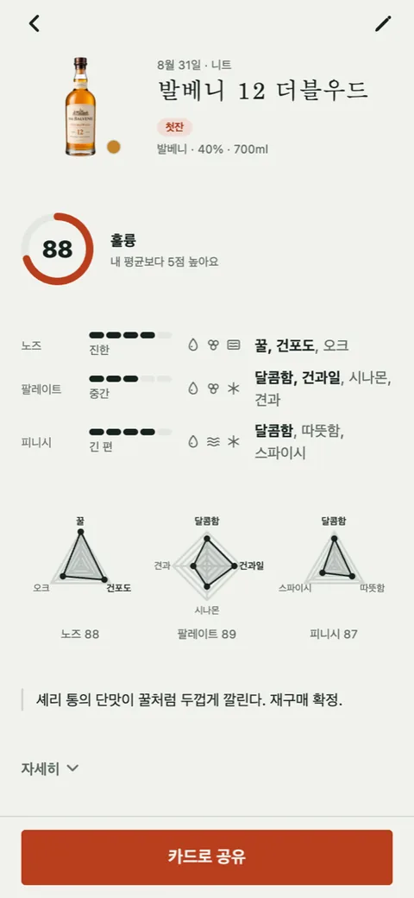

첫잔 [1] — 60점은 "무난"이 아니었다
위스키 기록 앱을 만들기 시작했습니다. 이름은 첫잔입니다. 첫날 한 일은 코드가 아니라, 기획서에 적어 둔 점수 안내 한 줄을 지우는 것이었습니다.
별 다섯 개에서 100점으로
처음 명세에는 별점을 넣었습니다. 별 다섯 개는 앱 평점의 기본형이라 따로 고민하지 않았습니다. 시장조사를 하면서 그 생각이 흔들렸습니다. 국내에서 위스키 이야기가 가장 활발한 곳(위스키 갤러리, 아래부터 위갤)과 세계에서 가장 큰 위스키 데이터베이스인 Whiskybase가 모두 100점제를 씁니다. 기록 앱의 점수가 그 바깥에서 통하지 않으면 사람들은 두 번 채점하거나, 앱을 안 씁니다.
그래서 명세 v1.1에서 100점제로 바꾸고, 입문자를 위해 안내를 한 줄 달았습니다.
60 무난 · 80 훌륭 · 90 인생 보틀
지금 보면 별 세 개를 100으로 환산한 숫자입니다. 별 셋이 60%니까 60은 무난, 별 넷이 80%니까 80은 훌륭. 100점제의 숫자만 가져오고 문화는 가져오지 않은 셈입니다.
60은 무난이 아니었다
Whiskybase의 점수 가이드를 읽고 알았습니다. 그쪽 기준으로 50~69점은 하위, 피해야 할 병입니다. 70~82가 평균 근처이고 그중에서도 76~82가 보통 나오는 점수입니다. 83~89는 남에게 권할 만한 좋은 위스키, 90 이상은 아주 드문 경험에만 씁니다.
즉 100칸 중 실제로 쓰이는 칸은 70에서 90 사이 스무 칸 정도입니다. 60점은 그 아래입니다. "무난"이 아니라, 남은 술은 하이볼로 타 먹자는 쪽에 가깝습니다.
관측
처음 안내대로라면 입문자는 괜찮게 마신 술에 60을 찍습니다. 그 사람이 나중에 위갤에서 같은 병의 리뷰를 보면 자기 점수만 20점이 낮습니다. 앱이 처음부터 다른 언어를 가르친 것입니다.

형용사 대신 행동
라벨을 여섯 구간으로 다시 짰습니다. 구간은 Whiskybase를 따르고, 말은 위갤에서 사람들이 실제로 쓰는 행동 언어에서 가져왔습니다.
| 구간 | 라벨 |
|---|---|
| ~69 | 아쉬움, 다시 안 찾을 듯 |
| 70~75 | 그럭저럭 |
| 76~82 | 무난한 데일리 |
| 83~86 | 좋음, 남에게 추천 |
| 87~89 | 훌륭, 바틀 재구매 각 |
| 90+ | 인생 보틀급 (아껴 쓰기) |
"훌륭"은 사람마다 기준이 다르지만 "한 병 더 살 것 같다"는 판단은 그 자리에서 답할 수 있습니다. 점수를 매기다 막힐 때 질문이 "이 술이 몇 점짜리인가"에서 "이걸 또 사겠는가"로 바뀌면 손이 움직입니다. 슬라이더를 움직이면 이 라벨이 따라오게 하고, 시작 위치도 80에서 82로 옮길 생각입니다. 실제 분포의 한가운데에 손가락을 놓아 주는 것입니다.
점수 하나로 안 되는 것
위갤 리뷰를 읽다 보니 점수를 두 번 매기는 사람이 많았습니다. 술 자체의 점수 하나, 가격까지 넣은 점수 하나. 맛은 88인데 이 값이면 80, 같은 식입니다. 위스키는 값이 맛과 따로 움직이는 물건이라 그럴 만합니다.
그걸 그대로 두 개의 점수로 만들면 기록이 무거워집니다. 그래서 두 번째 점수 대신 "다시 살 것인가" 칸 하나를 두기로 했습니다. 점수와 별개로 켜거나 끄는 한 칸입니다. 87점 이상 라벨에 이미 "재구매 각"이 들어가 있으니 겹치는 것 아닌가 싶기도 한데, 90점을 주고도 값 때문에 다시는 안 살 병이 있고, 78점인데 가성비로 늘 사 두는 병이 있습니다. 그 어긋남을 담을 자리가 이 칸입니다.
사람들이 이 칸을 누를지는 모르겠습니다. 안 누르면 빼면 됩니다.
남긴 규칙
점수의 숫자만 빌리지 않고, 그 숫자가 쓰이는 방식까지 빌린다. 라벨은 형용사가 아니라 행동으로 쓴다.
첫날의 정리
오늘 저장소에는 첫 커밋 하나뿐이고 화면은 아직 한 장도 없습니다. 고친 건 기획서의 표 하나입니다. 그런데 이 표가 이 앱이 어떤 사람들과 같은 말을 쓸지를 정합니다. 60에 무난이라 적어 둔 채 화면을 먼저 만들었다면, 기록 수백 개가 쌓인 뒤에 고쳐야 했을 겁니다.
82라는 시작점이 맞는지, 입문자가 이 라벨을 보고 편해질지는 써 보는 사람이 나와야 알 수 있습니다.

Seok
연구하듯 사업합니다. 배터리 재료를 원자 단위에서 계산하는 법을 바닥부터 배우는 중입니다. → 글 더 보기